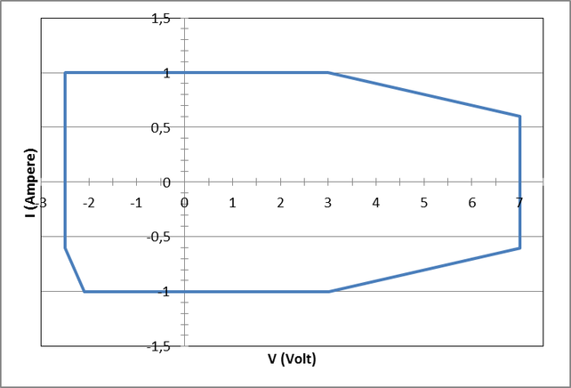
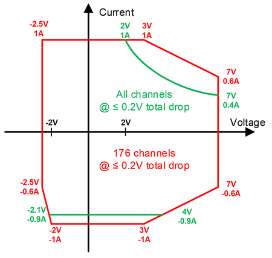
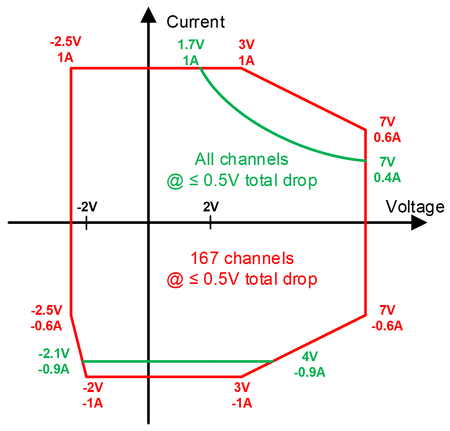
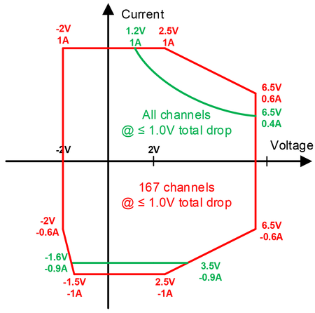

XPS256 voltage and current capability specifications
Continuous voltage and current capabilities per channel

The power diagram applies to an additional voltage drop in the force path beyond the pogo pin of total ≤ 0.5V.
Maximum continuous voltage and current capability per card
The following diagrams show the capability per card for a different number of active channels and different maximum total voltage drop on the force lines P and GND from the pogo pins to the DUT.
- All channels / 176 channels @ 0.2 V maximum total voltage drop for force and return path
-

- All channels / 167 channels @ 0.5 V maximum total voltage drop for force and return path
-

- All channels / 167 channels @ 1.0 V maximum total voltage drop for force and return path
-

Functional changes
- Introduced in SmarTest 7.10.1